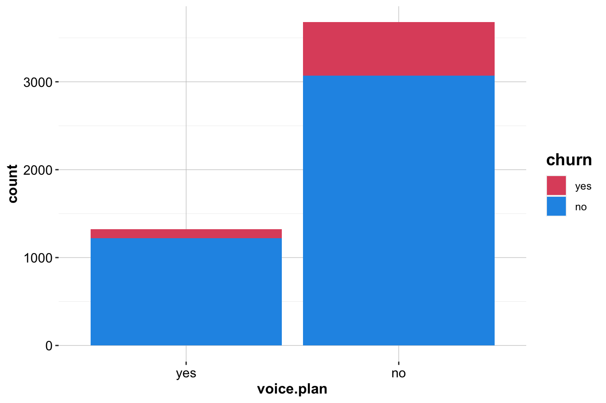
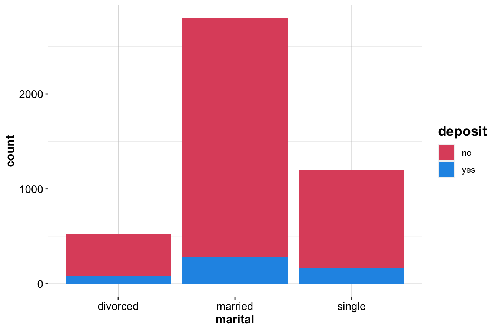
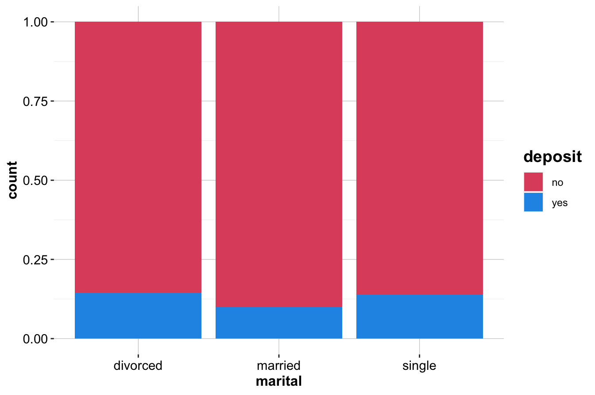

5 Statistical Inference and Hypothesis Testing
Statistical inference is the process of drawing conclusions about populations or scientific truths from data. There are two main types of statistical inference: estimation and hypothesis testing.
5.1 Estimation
Estimation is the process of estimating the value of a population parameter from a sample statistic. …
5.2 Hypothesis Testing
About 7 different hypothesis testing ….
Here are some examples that are part of the slides of week 3 (“Statistical Inference and Hypothesis Testing”). For these examples, we use the following datasets:
- churn: which is the same dataset that we’ve used for the Explanatory Data Analysis on week 2. You can find the description on the dataset here.
- bank: which is related to direct marketing campaigns of a Portuguese banking institution. You can find the description on the dataset here.
- advertising: which is related to the Social Media Ad Campaign marketing. You can find the description on the dataset here.
These datasets are available in the liver package. Here, we first load the liver and ggplot2 packages:
Now, we load the datasets in our R environment as follows
5.3 Confidence Interval for mean
We are interested to calculate the 95% confidence interval for the
population mean of the variable “customer.calls”. In R, by using
function t.test(), we can have a confidence interval for the
population mean as follows
t.test(x = churn$customer.calls, conf.level = 0.95)$"conf.int"
[1] 1.534181 1.606619
attr(,"conf.level")
[1] 0.95It means the population mean number of Customer Service Calls is between 1.534 and 1.607 with a 95% probability (i.e. if repeated samples were taken, 95% of them would contain the true population mean).
5.4 Confidence Interval for proportion
We are interested to calculate the 95% confidence interval for the
proportion (\(\pi\)) of churners among the entire population of the
company’s customers. In R, by using function prop.test(), we can have
a confidence interval for the population mean as follows
prop.test(table(churn$churn), conf.level = 0.95)$"conf.int"
[1] 0.1319201 0.1514362
attr(,"conf.level")
[1] 0.95It means the proportion (\(\pi\)) of churners among the entire population of the company’s customers is between 0.132 and 0.151 with a 95% probability (i.e. if repeated samples were taken, 95% of them would contain the true population mean).
5.5 One-sample T-test
Here, based on the churn dataset, we want to test whether the mean number of Customer Service Calls differs from 2, with a level of significance \(\alpha\)=0.05.
In this case, our hypothesis is:
\[ \bigg\{ \begin{matrix} H_0: \mu = 2 \\ H_a: \mu \neq 2 \end{matrix} \]
Now, by using the function t.test() we run our two-sided hypothesis
test as following with a level of significance \(\alpha\)=0.05
t.test(x = churn$customer.calls,
mu = 2,
alternative = "two.sided",
conf.level = 0.95)
One Sample t-test
data: churn$customer.calls
t = -23.253, df = 4999, p-value < 2.2e-16
alternative hypothesis: true mean is not equal to 2
95 percent confidence interval:
1.534181 1.606619
sample estimates:
mean of x
1.5704Since p-value \(< \alpha=0.05\) we reject \(H_0\). Thus, at \(\alpha=0.05\) level of significance, there is evidence that the population mean number of Customer Service Calls of such customers differs from 2.
5.6 Hypothesis testing for proportion
In the churn dataset, the target variable is the churn variable. For this variable we want to test whether the proportion of customer churn \(\pi\) differs from 0.15.
In this case, our hypothesis is: \[ \bigg\{ \begin{matrix} H_0: \pi = 0.15 \\ H_a: \pi \neq 0.15 \end{matrix} \]
In R, for the hypothesis testing of proportion we use the
prop.test() function as follows:
prop.test(table(churn$churn), p = 0.15)
1-sample proportions test with continuity correction
data: table(churn$churn), null probability 0.15
X-squared = 2.8333, df = 1, p-value = 0.09233
alternative hypothesis: true p is not equal to 0.15
95 percent confidence interval:
0.1319201 0.1514362
sample estimates:
p
0.1414Since the p-value is not less than \(\alpha=0.05\) we would not reject \(H_0\). Assessing the strength of evidence, we find no evidence against \(H_0\).
5.7 Two-sample T-test
For the churn dataset, we want to investigate the relationship between
the variable International Calls (intl.calls) and the target
variable churn.
First, to see the relationship between variable International Calls and the target variable churn, we report the boxplot as follows:
ggplot(data = churn) +
geom_boxplot(aes(x = churn, y = intl.calls), fill = c(2, 4))The above plot does not indicate strong graphical evidence of the predictive importance of International Calls.
To assess whether the two groups of units have different means, we perform a Two-Sample T-test for the difference in means with hypotheses: \[ \bigg\{ \begin{matrix} H_0: \mu_1 = \mu_2 \\ H_a: \mu_1 \neq \mu_2 \end{matrix} \]
In R, it would be
t.test(intl.calls ~ churn, data = churn)
Welch Two Sample t-test
data: intl.calls by churn
t = -3.2138, df = 931.13, p-value = 0.001355
alternative hypothesis: true difference in means between group yes and group no is not equal to 0
95 percent confidence interval:
-0.5324872 -0.1287201
sample estimates:
mean in group yes mean in group no
4.151344 4.481947Since the P-value (0.003186) is less than \(\alpha\)=0.05, thus we reject the \(H_0\). Thus, the difference in the mean number of international calls for churners and non-churners is statistically significant, meaning that this variable is indeed useful for predicting churn: Churners tend to place a lower mean number of international calls.
5.8 Two-Sample Z-test
In the churn dataset, we want to test whether there is a relationship
between the target variable (churn) and the variable Voice Mail Plan
(voice.plan).
First, to see the relationship between variable Voice Mail Plan and the target variable churn, we report bar plots as follows:
ggplot(data = churn) +
geom_bar(aes(x = voice.plan, fill = churn)) +
scale_fill_manual(values = c(2, 4))
ggplot(data = churn) +
geom_bar(aes(x = voice.plan, fill = churn), position = "fill") +
scale_fill_manual(values = c(2, 4)) 
In this case the hypotheses are
\[ \bigg\{ \begin{matrix} H_0: \pi_1 = \pi_2 \\ H_a: \pi_1 \neq \pi_2 \end{matrix} \]
Below is a table for counts of voice.plan and churn by using the
table() function in R as follows:
table(churn$churn, churn$voice.plan, dnn = c("churn", "voice.plan"))
voice.plan
churn yes no
yes 102 605
no 1221 3072For the Two-Sample Z-test for Difference in Proportions, we use the
prop.test() function as follows. If you want to know more about this
function, just type ?prop.test in your Console.
prop.test(table(churn$voice.plan, churn$churn))
2-sample test for equality of proportions with continuity correction
data: table(churn$voice.plan, churn$churn)
X-squared = 60.552, df = 1, p-value = 7.165e-15
alternative hypothesis: two.sided
95 percent confidence interval:
-0.1066667 -0.0682109
sample estimates:
prop 1 prop 2
0.07709751 0.16453631Since the p-value is smaller than \(\alpha=0.05\) we reject the \(H_0\). Thus, the proportion of Voice Mail Plan members differs between the churner and non-churner groups. It means the variable * Voice Mail Plan* is indeed useful for predicting churn.
5.9 Chi-square Test
In the bank dataset, we want to test whether there is a relationship
between the target variable (deposit) and the variable “marital”.
Here is a structure of the bank dataset:
str(bank)
'data.frame': 4521 obs. of 17 variables:
$ age : int 30 33 35 30 59 35 36 39 41 43 ...
$ job : Factor w/ 12 levels "admin.","blue-collar",..: 11 8 5 5 2 5 7 10 3 8 ...
$ marital : Factor w/ 3 levels "divorced","married",..: 2 2 3 2 2 3 2 2 2 2 ...
$ education: Factor w/ 4 levels "primary","secondary",..: 1 2 3 3 2 3 3 2 3 1 ...
$ default : Factor w/ 2 levels "no","yes": 1 1 1 1 1 1 1 1 1 1 ...
$ balance : int 1787 4789 1350 1476 0 747 307 147 221 -88 ...
$ housing : Factor w/ 2 levels "no","yes": 1 2 2 2 2 1 2 2 2 2 ...
$ loan : Factor w/ 2 levels "no","yes": 1 2 1 2 1 1 1 1 1 2 ...
$ contact : Factor w/ 3 levels "cellular","telephone",..: 1 1 1 3 3 1 1 1 3 1 ...
$ day : int 19 11 16 3 5 23 14 6 14 17 ...
$ month : Factor w/ 12 levels "apr","aug","dec",..: 11 9 1 7 9 4 9 9 9 1 ...
$ duration : int 79 220 185 199 226 141 341 151 57 313 ...
$ campaign : int 1 1 1 4 1 2 1 2 2 1 ...
$ pdays : int -1 339 330 -1 -1 176 330 -1 -1 147 ...
$ previous : int 0 4 1 0 0 3 2 0 0 2 ...
$ poutcome : Factor w/ 4 levels "failure","other",..: 4 1 1 4 4 1 2 4 4 1 ...
$ deposit : Factor w/ 2 levels "no","yes": 1 1 1 1 1 1 1 1 1 1 ...First, to see the relationship between variable marital and the target
variable deposit, we report bar plots as follows:
ggplot(data = bank) +
geom_bar(aes(x = marital, fill = deposit)) +
scale_fill_manual(values = c(2, 4))
ggplot(data = bank) +
geom_bar(aes(x = marital, fill = deposit), position = "fill") +
scale_fill_manual(values = c(2, 4)) 
Below is a table for counts of marital and deposit:
table(bank$deposit, bank$marital, dnn = c("deposit", "marital"))
marital
deposit divorced married single
no 451 2520 1029
yes 77 277 167We use Chi-square test for the homogeneity of proportions to test whether significant differences exist between the multinomial proportions of the two the two groups of deposits (“yes” or “no”). The hypotheses are \[ \bigg\{ \begin{matrix} H_0: \pi_{divorced, \ yes} = \pi_{married, \ yes} = \pi_{single, \ yes} \\ H_a: At \ least \ one \ of \ the \ claims \ in \ H_0 \ is \ wrong. \end{matrix} \]
To run the chi-square test, we use function chisq.test() as follows
chisq.test(table(bank$deposit, bank$marital))
Pearson's Chi-squared test
data: table(bank$deposit, bank$marital)
X-squared = 19.03, df = 2, p-value = 7.374e-05Since the p-value is smaller than \(\alpha=0.05\) we reject the \(H_0\).
Thus, the proportion of the category of the variable marital differs
between the two groups. It means the variable marital is indeed useful
for predicting deposit.
5.10 Chi-Square Test
In the previous example, assume marital status of the population is divorced = 12%, married = 63%, single = 25%. Determine whether the sample is representative of the population.
We use Chi-square test with hypotheses: \[ \bigg\{ \begin{matrix} H_0: \pi_{divorced} = 0.12, \pi_{married} = 0.63, \pi_{single} = 0.25 \\ H_a: At \ least \ one \ of \ the \ claims \ in \ H_0 \ is \ wrong. \end{matrix} \]
First, we report a barplot of the variable marital:
For the chi-square test, we use function chisq.test() as follows
chisq.test(table(bank$marital), p = c(0.12, 0.63, 0.25))
Chi-squared test for given probabilities
data: table(bank$marital)
X-squared = 5.1349, df = 2, p-value = 0.07673The p-value is large than \(\alpha=0.05\). Thus, there is no evidence that the observed frequencies represent proportions that differ significantly from those in the null hypothesis. In other words, our sample is representative of the population.
5.11 Analysis of Variance (ANOVA)
In the advertising dataset, we want to test whether there is a
relationship between the target variable “approved” and the variable
“age”.
Here is a structure of the advertising dataset:
str(advertising)
'data.frame': 1143 obs. of 11 variables:
$ ad.id : int 708746 708749 708771 708815 708818 708820 708889 708895 708953 708958 ...
$ xyz.campaign.id: int 916 916 916 916 916 916 916 916 916 916 ...
$ fb.campaign.id : int 103916 103917 103920 103928 103928 103929 103940 103941 103951 103952 ...
$ age : Factor w/ 4 levels "30-34","35-39",..: 1 1 1 1 1 1 1 1 1 1 ...
$ gender : Factor w/ 2 levels "F","M": 2 2 2 2 2 2 2 2 2 2 ...
$ interest : int 15 16 20 28 28 29 15 16 27 28 ...
$ impressions : int 7350 17861 693 4259 4133 1915 15615 10951 2355 9502 ...
$ clicks : int 1 2 0 1 1 0 3 1 1 3 ...
$ spend : num 1.43 1.82 0 1.25 1.29 ...
$ conversion : int 2 2 1 1 1 1 1 1 1 1 ...
$ approved : int 1 0 0 0 1 1 0 1 0 0 ...A detailed description of the dataset can be found here.
First, we report the bar plot of the variable marital:
ggplot(data = advertising, aes(x = age, y = approved)) +
geom_boxplot(fill = c(2:5)) +
geom_jitter(shape = 16, position = position_jitter(0.2))Check whether the mean value of a continuous variable is the same across the four partitions of a data set, we set the following hypotheses:
\[ \bigg\{ \begin{matrix} H_0: \mu_{30-34} = \mu_{35-39} = \mu_{40-44} = \mu_{45-49} \\ H_a: Not \ all \ the \ means \ are \ equal. \end{matrix} \]
For the ANOVA test, we use the function aov() as follows
anova = aov(approved ~ age, data = advertising)
summary(anova)
Df Sum Sq Mean Sq F value Pr(>F)
age 3 32 10.57 3.524 0.0146 *
Residuals 1139 3417 3.00
---
Signif. codes: 0 '***' 0.001 '**' 0.01 '*' 0.05 '.' 0.1 ' ' 1Since the p-value is smaller than \(\alpha=0.05\), thus we reject \(H_0\).
It indicates that not all population means are equal. It means that
there is a relationship between “age” and target the variable
“approved”.
5.12 Correlation Test
In the advertising dataset, we want to test whether there is a
relationship between the target variable “approved” and the variable
“spend”. Bellow you could see the scoter plot for these two numerical
variables as follows:
ggplot(advertising, aes(x = spend, y = approved)) +
geom_point() +
labs(x = "Spend", y = "Approved") Check whether there is a relationship between two numerical variables, we set the following hypotheses:
\[
\bigg\{
\begin{matrix}
H_0: \rho = 0 \\
H_a: \rho \neq 0 .
\end{matrix}
\] For the correlation test, we use the function cor.test() as follows
cor.test(x = advertising$spend, y = advertising$approved)
Pearson's product-moment correlation
data: advertising$spend and advertising$approved
t = 24.888, df = 1141, p-value < 2.2e-16
alternative hypothesis: true correlation is not equal to 0
95 percent confidence interval:
0.5542574 0.6295099
sample estimates:
cor
0.5931778Since the p-value is smaller than \(\alpha=0.05\), thus we reject \(H_0\).
It indicates there is a relationship between “spend” and target the
variable “approved”.
\(~\)